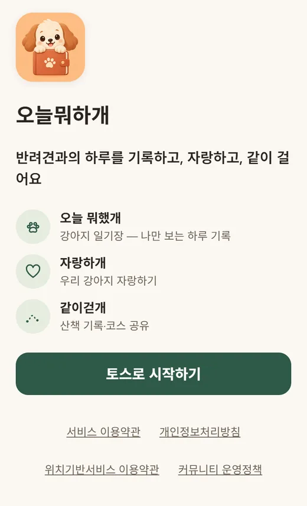
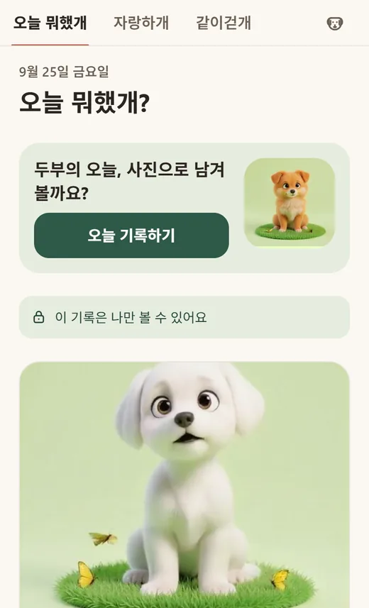
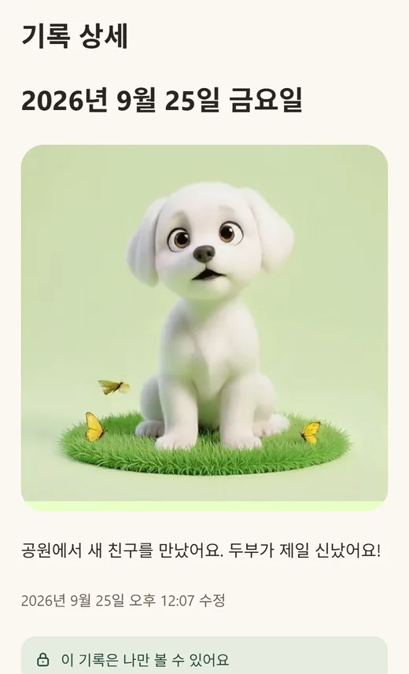
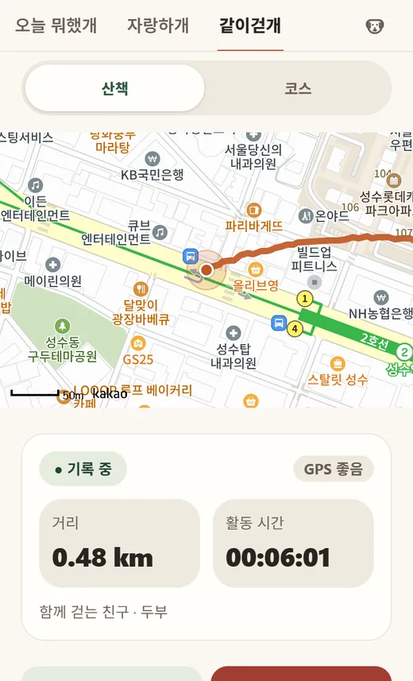
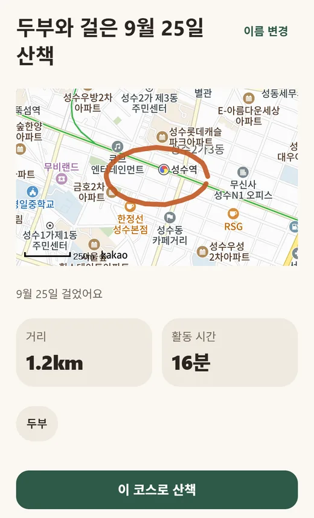
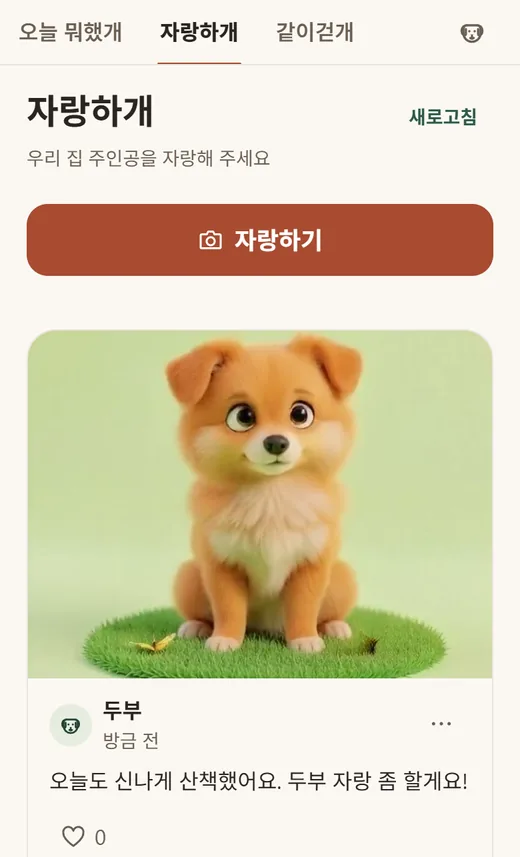

사용방법 안내
오늘뭐하개 사용방법
반려견과의 하루를 기록하고(오늘 뭐했개), 자랑하고(자랑하개), 같이 걷는(같이걷개) 토스 앱 안의 반려견 미니앱이에요.
- 출시 준비 중
- 토스 앱 안의 미니앱
아직 출시 준비 중이에요. 화면과 기능은 출시 전에 달라질 수 있어요.
앱 정보
- 앱 형태
- 토스 앱 안에서 실행되는 미니앱
- 필요한 것
- 토스 앱
- 이용 대상
- 만 19세 이상
- 상태
- 출시 준비 중
단계별 사용방법
처음 시작부터 자랑하기까지 6단계예요. 스크린샷은 예시 데이터로 만든 화면이라, 반려견 이름·사진·거리·시간 같은 값은 실제와 달라요.
-
1단계. 토스로 시작하고 첫 반려견 등록하기

크게 보기 (새 창)- 앱을 열면 5초쯤 인트로 영상이 나와요. 건너뛰기로 넘길 수 있어요.
- 인트로 화면에서 토스로 시작하기를 누르면 토스 로그인이 열려요.
- 처음이라면 '누구와 함께 걸을까요?' 화면이 나와요. 이름(필수, 20자까지)을 쓰고 등록하고 계속하기를 눌러요.
- 견종·생일(또는 나이)·몸무게·소개·사진은 비워 둬도 돼요. 한 마리 더 있으면 등록하고 한 마리 더 추가를 눌러요.
앱을 열자마자 로그인 창이 저절로 뜨지는 않아요. 반려견 등록 화면은 이 스크린샷에 나오지 않아요.
-
2단계. 오늘 기록하기로 하루 남기기

크게 보기 (새 창)- 등록이 끝나면 오늘 뭐했개 홈이 열려요. 위쪽 탭으로 오늘 뭐했개·자랑하개·같이걷개를 오가요.
- 오늘 기록하기를 누르면 작성 화면이 나와요.
- 날짜, 함께한 반려견, 사진(선택), 글을 채우고 저장을 눌러요.
- 사진 칸을 누르면 사진 촬영과 앨범에서 선택이 나와요. 글은 1~1,000자예요.
이 기록은 나만 볼 수 있어요.
-
3단계. 기록 상세에서 보고, 고치고, 올리기

크게 보기 (새 창)- 저장하면 기록 상세가 열려요. 날짜, 사진, 글, 수정 시각이 보여요.
- 화면 아래에 자랑하개에 올리기, 수정, 삭제가 있어요.
- 자랑하개에 올리기를 누르면 일기 글(300자까지)·사진·반려견이 자랑하개 작성 화면으로 옮겨져요.
삭제는 되돌릴 수 없어요. 올리기 전에는 다른 사람에게 보이지 않아요. 버튼 세 개는 스크린샷 아래쪽에 있어서 이 화면에는 보이지 않아요.
-
4단계. 같이걷개에서 산책 기록하기

크게 보기 (새 창)- 같이걷개 탭의 산책에서 함께 갈 친구를 골라요. 처음엔 전부 선택돼 있어요.
- 산책 시작하기를 눌러요. 처음에는 위치정보 동의 화면이 나와요.
- '위치정보 수집·이용에 동의해요 (필수)'를 체크하고 동의하고 시작을 누르면 위치 권한을 물어봐요.
- 산책이 시작되면 지도에 경로가, 아래에 거리·활동 시간·GPS 상태가 보여요.
- 쉬려면 잠깐 쉬기, 이어 걸으려면 계속 걷기예요. 끝낼 때는 산책 종료를 누르고 종료하기를 눌러요.
- 계단·공사 같은 길 정보는 장애물·특징 남기기로 남겨요.
산책하는 동안 화면을 켜 두세요.
-
5단계. 코스로 저장하고 다시 걷거나 공유하기

크게 보기 (새 창)- 산책을 마치면 코스 이름(제안이 미리 들어 있어요, 1~40자), 메모(선택), 사진(선택)을 정해요.
- 내 코스에 저장을 누르면 코스 상세가 열려요. 저장하지 않으려면 기록만 남기기나 기록 삭제를 눌러요.
- 코스 상세에서는 이 코스로 산책으로 같은 길을 다시 걷고, 이름 변경으로 이름을 고쳐요.
- 공유하기를 누르면 공유 화면이 나와요. '시작·종료 지점 주변 200m 숨기기'가 기본으로 켜져 있어요.
- 공유 링크 만들기를 누르면 공유 창이 열려요. 공유를 멈추고 싶을 때는 공유 중단을 눌러요.
숨기기를 끄면 집 근처가 그대로 드러날 수 있다는 경고가 나와요.
-
6단계. 자랑하개에 자랑하기

크게 보기 (새 창)- 자랑하개 탭에서 자랑하기를 눌러요.
- 반려견을 고르고(필수), 사진 1~2장(필수)과 이야기(1~300자)를 써요. 내가 공유 중인 코스가 있으면 연결할 수 있어요(선택).
- 처음 올릴 때는 '커뮤니티 운영정책에 동의해요 (필수)'를 체크해야 해요. 자랑 올리기를 누르면 피드에 올라가요.
- 피드에서는 하트로 좋아요를 누르고, 새로고침으로 새 글을 불러와요.
- 다른 사람 글의 ⋯ 메뉴에는 신고하기와 이 이용자 글 가리기가 있어요.
자랑하개에 올린 글은 다른 이용자도 볼 수 있어요.
이런 걸 할 수 있어요
오늘뭐하개에서 할 수 있는 일이에요.
오늘 뭐했개
나만 보는 강아지 일기장이에요. 사진은 0~1장(선택), 글은 1~1,000자예요. 함께한 반려견을 최대 10마리까지 태그할 수 있어요.
산책 달력
오늘 뭐했개 홈의 산책 달력에서 함께 걸은 날을 한눈에 볼 수 있어요.
자랑하개
사진 1~2장과 이야기(1~300자)로 올리는 자랑 피드예요. 좋아요, 신고, 이용자 글 가리기가 있어요.
일기를 자랑하개로
일기 상세의 자랑하개에 올리기를 누르면 일기의 글·사진·반려견이 자랑하개 작성 화면으로 옮겨져요.
같이걷개 산책
GPS로 산책 경로·거리·활동 시간을 기록해요. 여러 마리와 함께 걸을 수 있고, 잠깐 쉬기와 계속 걷기가 있어요.
장애물·특징 남기기
산책 중 계단, 공사, 좁은 길, 급수대, 쉼터, 그늘, 기타 7가지 지점을 지도에 남겨요(설명 1~160자).
코스
산책을 내 코스에 저장하고, 이 코스로 산책으로 같은 길을 다시 걸어요. 참고 경로는 점선으로 보여요.
코스 공유
링크로 코스를 보내요. 시작·종료 지점 주변 200m 숨기기가 기본으로 켜져 있어요. 받은 코스는 내 코스에 담기로 저장해요.
우리 강아지
반려견 프로필을 최대 20마리까지 등록하고, 보관했다가 다시 보이게 할 수 있어요.
설정
동의 내역, 인트로 영상 켜기·끄기, 차단 목록, 약관 보기, 로그아웃, 탈퇴하기가 있어요.
알아 두면 좋은 팁
알아 두면 편한 내용을 모았어요.
-
사진
사진은 앱이 자동으로 줄여요
오늘 뭐했개·자랑하개 사진은 3MB 이하, 반려견 프로필·코스 사진은 500KB 이하로 줄여요.
줄인 뒤 'N KB로 줄였어요' 미리보기가 나와요. 이 사진 사용하기를 눌러야 올라가요.
-
사진
쓸 수 있는 사진 형식
JPEG·PNG·WebP를 쓸 수 있어요. 원본이 25MB를 넘으면 받지 않아요.
HEIC는 기기에서 바꿀 수 없으면 'JPEG 사진을 선택하거나 카메라 설정의 포맷을 높은 호환성으로 바꿔 주세요'라고 안내해요.
-
사진
촬영 위치는 저장하지 않아요
사진의 촬영 위치(EXIF)는 저장하지 않아요. 앱이 사진을 다시 인코딩하고, 서버도 메타데이터를 지워요.
자랑하개 작성 화면에도 '현재 위치나 사진 촬영 위치는 공개되지 않아요.'라고 나와요.
-
한도
글자 수와 개수 한도
- 일기 글
- 1~1,000자 (공백만 쓰면 저장할 수 없어요)
- 자랑하개 이야기
- 1~300자
- 반려견 이름 · 견종 · 소개
- 1~20자 · 30자 · 200자
- 코스 이름 · 메모
- 1~40자 · 500자
- 지점 설명
- 1~160자
- 신고 추가 내용
- 300자
- 반려견 등록
- 최대 20마리
- 일기에 태그하는 반려견
- 최대 10마리
- 사진
- 일기 0~1장 · 자랑하개 1~2장
글자 수는 앞뒤 공백을 뺀 글자 기준이에요. 반려견이 20마리를 넘으면 '반려견은 최대 20마리까지 등록할 수 있어요.'가 나와요.
-
글쓰기
금기어 필터
다른 사람에게 보이는 글에만 적용돼요. 자랑하개 이야기, 반려견 이름, 코스 이름, 지점 설명이에요.
금기어가 있으면 저장 전에 '사용할 수 없는 표현이 포함돼 있어요. 내용을 바꿔 주세요.'라고 하며 저장되지 않아요. 공백이나 구두점을 끼워 넣은 표현도 같은 단어로 봐요.
본인만 보는 일기에는 적용하지 않아요.
-
공개 범위
누가 볼 수 있나요
일기는 나만 봐요.
자랑하개 글과 공유한 코스는 다른 이용자가 볼 수 있어요.
-
산책
위치 동의는 처음 산책할 때
처음 산책 시작하기를 누를 때 받아요. 같이걷개 탭을 열기만 해서는 위치 권한을 묻지 않아요.
동의하지 않아도 일기·반려견 등록·지난 기록 보기는 쓸 수 있어요.
-
산책
산책하는 동안 화면을 켜 두세요
화면이 꺼지거나 토스 앱을 벗어나면 기록이 멈출 수 있어요.
중간에 앱이 닫히면 다음에 '이전에 기록하던 산책이 있어요'가 나와요. 이어서 걷기·여기서 종료·기록 삭제 중에서 고를 수 있어요.
오프라인이면 기록은 기기에 저장되고, 연결되면 올라가요.
-
산책
함께 갈 친구는 한 마리 이상
산책 시작 화면에서 함께 갈 친구를 한 마리도 고르지 않으면 '함께 갈 강아지를 한 마리 이상 선택해 주세요.'가 나와요.
-
코스 공유
집 근처는 기본으로 숨겨요
시작·종료 지점 반경 200m를 숨겨요(기본 켜짐). 끄면 '시작·종료 지점(집 근처 등)이 그대로 드러날 수 있어요.'라는 경고가 나와요.
숨기고 남는 경로가 200m보다 짧으면 공유할 수 없어요. 그래도 완전한 익명화는 아니에요.
-
코스 공유
공유되는 것과 안 되는 것
공유되는 것: 코스 이름, 숨김 처리된 경로, 지점, 거리·시간(거리는 10m, 시간은 분 단위로 반올림).
공유되지 않는 것: 정확한 시작 시각, 메모, 사진, 숨긴 구간의 경로와 지점이에요.
-
신고·차단
불편한 글 신고하기
자랑하개 글의 ⋯ 메뉴 > 신고하기예요. 사유는 스팸, 부적절한 내용, 위험한 내용, 개인정보 노출, 잘못된 정보, 기타 중에서 고르고 설명은 선택이에요(300자까지).
접수되면 '신고가 접수됐어요. 24시간 안에 확인할게요.'가 나오고, 이어서 '이 이용자 글도 가릴까요?'를 물어봐요.
서로 다른 이용자 3명 이상이 신고하면 검토 전까지 글이 피드에서 보이지 않아요.
-
신고·차단
공유받은 코스와 지점 신고하기
공유받은 코스에도 이 코스 신고하기가 있고, 코스 안의 지점도 신고하기를 쓸 수 있어요.
이 시트의 사유 이름은 스팸·광고, 부적절한 내용, 위험한 정보, 개인정보 노출, 잘못된 정보, 기타예요.
-
신고·차단
이용자 글 가리기와 해제
글의 ⋯ 메뉴 > 이 이용자 글 가리기예요. 가린 이용자의 글은 피드에 보이지 않아요.
풀려면 우리 강아지 아이콘 > 설정 > 차단 목록 > 차단 해제를 눌러요. 차단 목록에는 그 글에 쓰인 반려견 이름이 표시돼요.
-
설정
인트로 영상 끄기
설정의 '앱을 열 때 인트로 영상 보기'에서 끌 수 있어요.
설정은 상단의 강아지 아이콘(우리 강아지) 화면 맨 아래 설정에 있어요.
자주 묻는 질문
질문을 누르면 답이 펼쳐져요.
오늘뭐하개는 어떤 앱이에요? 앱스토어나 구글 플레이에서 받나요?
토스 앱 안에서 실행되는 미니앱이에요. 토스 앱이 있어야 쓸 수 있어요. 지금은 출시 준비 중이라 열어 볼 수 있는 링크는 아직 없어요.
로그인은 어떻게 하나요?
인트로 화면에서 토스로 시작하기를 누르면 토스 로그인이 열려요. 앱을 열자마자 자동으로 열리지는 않아요. 약관 동의는 토스 로그인 과정에서 받아요. 이용자는 만 19세 이상이에요.
로그인 전에 약관을 볼 수 있나요?
네. 인트로 화면 아래의 서비스 이용약관, 개인정보처리방침, 위치기반서비스 이용약관, 커뮤니티 운영정책 링크는 로그인 전에도 열려요. 개인정보처리방침은 이 사이트에서도 볼 수 있어요.
반려견은 꼭 등록해야 하나요? 몇 마리까지 되나요?
처음 로그인하면 반려견을 등록하는 화면이 먼저 나와요. 이름만 필수예요. 최대 20마리까지 등록할 수 있어요. 보관한 반려견은 산책 상대로 고를 수 없지만, 우리 강아지 화면의 '보관한 반려견'에서 다시 보이기로 되돌릴 수 있어요.
사진 크기 제한이 있나요?
오늘 뭐했개와 자랑하개 사진은 3MB 이하로 자동 압축돼요. 반려견 프로필과 코스 사진은 500KB 이하로 자동 압축돼요. 원본이 25MB보다 크거나 JPEG·PNG·WebP가 아니면 다른 사진을 골라야 해요.
일기는 누가 볼 수 있나요?
나만 볼 수 있어요. 일기 글과 사진에는 금기어 필터도 적용하지 않아요. 일기를 자랑하개에 올리면 그 글은 다른 이용자도 볼 수 있어요.
위치 동의는 언제 하나요?
처음 산책 시작하기를 누를 때 위치정보 동의 화면이 나와요. 동의하면 휴대폰의 위치 권한도 물어봐요. 위치는 산책을 기록하는 동안에만 모아요. 수집 항목은 위도·경도, 기록 시각, 정확도예요. 동의하지 않아도 산책 기록을 뺀 다른 기능은 쓸 수 있어요.
산책 중에 화면을 꺼도 되나요?
화면이 꺼지거나 토스 앱을 벗어나면 기록이 멈출 수 있어요. 앱이 '화면 켜두기 사용 중'을 보여 주니, 산책하는 동안 화면을 켜 두세요. 끊긴 구간은 이어 붙이지 않고 새 구간으로 이어져요. 앱이 닫혀도 지금까지 기록은 기기에 저장돼 다음에 이어서 할 수 있어요.
산책 거리·경로가 정확한가요?
기기의 위치 신호에 따라 정확하지 않을 수 있어요. 다른 이용자가 남긴 장애물·특징 정보는 참고용이고, 현장 상황은 달라질 수 있다고 앱이 안내해요.
코스를 공유하면 우리 집이 드러나나요?
시작·종료 지점 반경 200m를 기본으로 숨겨요. 그래도 주변 지형으로 위치를 짐작할 수 있어서 완전한 익명화는 아니라고 앱이 안내해요. 공유 화면에서 숨기기를 끌 수도 있지만, 끄면 경고가 나와요. 링크를 만든 뒤에도 공유 중단으로 멈출 수 있고, 중단하면 이미 보낸 링크로도 볼 수 없어요.
공유 링크를 받으면 어떻게 열어요?
토스 앱에서 링크를 열면 앱이 시작돼요. 로그인이 되어 있고 반려견이 등록돼 있으면 공유받은 코스 화면이 열려요. 반려견이 없으면 등록 화면이 먼저 나와요. 내 코스에 담기에서 이름을 정하고 담기를 누르면 같이걷개 > 코스 > '공유받은 코스'에 저장돼요.
공유한 코스를 지우면 받은 사람은 어떻게 되나요?
코스를 삭제하면 공유 링크도 함께 멈춰요. 받은 사람의 목록에는 '원작자가 삭제한 코스예요'로 보이고, 목록에서 지우기로 정리할 수 있어요. 공유를 중단한 경우에는 '공유가 중단된 코스예요'로 보여요.
불편한 글은 어떻게 하나요?
자랑하개 글의 ⋯ 메뉴에서 신고하기나 이 이용자 글 가리기를 눌러요. 신고하면 '24시간 안에 확인할게요'라고 안내하고, 서로 다른 이용자 3명 이상이 신고하면 검토 전까지 피드에서 보이지 않아요. 가린 이용자는 설정 > 차단 목록에서 풀 수 있어요.
글이 저장되지 않고 '사용할 수 없는 표현'이라고 나와요.
자랑하개 이야기, 반려견 이름, 코스 이름, 지점 설명에는 금기어 필터가 있어요. 금기어가 들어 있으면 저장되지 않아요. 표현을 바꿔서 다시 저장해 주세요. 앱에서는 어떤 단어가 금기어인지 알려 주지 않아요.
회원 탈퇴는 어떻게 하나요?
우리 강아지 아이콘 > 설정 > 탈퇴하기를 누르고 확인창 두 번에 모두 동의하면 돼요. 반려견·산책 기록·코스·공유 링크·자랑 글·일기·사진이 모두 삭제되고 되돌릴 수 없어요. 토스 로그인 연결도 끊겨요. 토스 앱에서 연결을 끊어도 탈퇴와 같이 처리돼요.
위치 기록은 얼마나 보관하나요?
산책 기록과 코스를 삭제하거나 탈퇴할 때까지 보관해요. 위치정보 이용·제공사실 확인자료는 법에 따라 6개월 이상 보관해요.
광고가 나오나요?
서비스 화면에 광고가 표시될 수 있다고 앱 안의 약관에 적혀 있어요. 세 탭 화면 아래에 토스 배너 광고 자리가 있어요.
문의나 이용 제한 이의신청은 어디로 하나요?
앱 안의 약관에 적힌 이메일 onlyonetech@nate.com 으로 해요. 이용 제한에 대한 이의는 제한 사실을 안 날부터 30일 안에 신청할 수 있고, 7일 안에 결과를 알려 준다고 약관에 적혀 있어요.
더 알아보기
궁금한 점이 남았다면 onlyonetech@nate.com 으로 문의해 주세요.